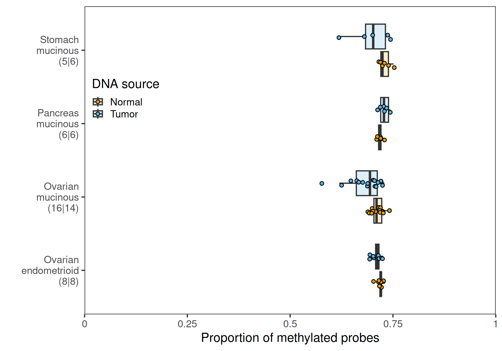
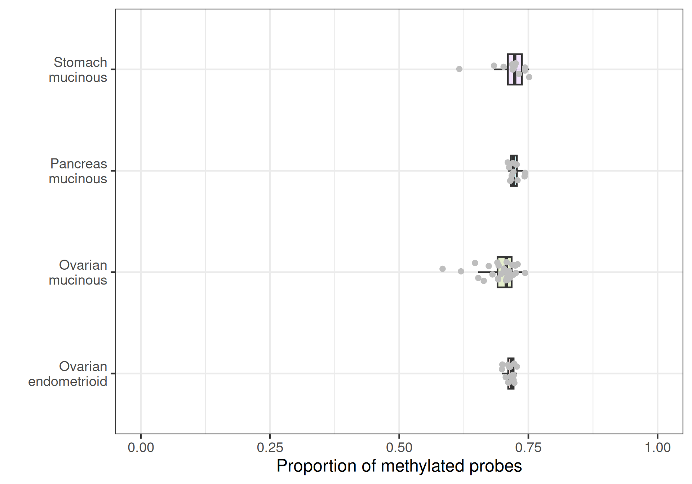

Last updated: 2026-08-31
Checks: 7 0
Knit directory: repo/analysis/
This reproducible R Markdown analysis was created with workflowr (version 1.7.2). The Checks tab describes the reproducibility checks that were applied when the results were created. The Past versions tab lists the development history.
Great! Since the R Markdown file has been committed to the Git repository, you know the exact version of the code that produced these results.
Great job! The global environment was empty. Objects defined in the global environment can affect the analysis in your R Markdown file in unknown ways. For reproduciblity it’s best to always run the code in an empty environment.
The command set.seed(12345) was run prior to running the
code in the R Markdown file. Setting a seed ensures that any results
that rely on randomness, e.g. subsampling or permutations, are
reproducible.
Great job! Recording the operating system, R version, and package versions is critical for reproducibility.
Nice! There were no cached chunks for this analysis, so you can be confident that you successfully produced the results during this run.
Great job! Using relative paths to the files within your workflowr project makes it easier to run your code on other machines.
Great! You are using Git for version control. Tracking code development and connecting the code version to the results is critical for reproducibility.
The results in this page were generated with repository version 9e09a1a. See the Past versions tab to see a history of the changes made to the R Markdown and HTML files.
Note that you need to be careful to ensure that all relevant files for
the analysis have been committed to Git prior to generating the results
(you can use wflow_publish or
wflow_git_commit). workflowr only checks the R Markdown
file, but you know if there are other scripts or data files that it
depends on. Below is the status of the Git repository when the results
were generated:
Ignored files:
Ignored: .Rhistory
Ignored: .claude/
Ignored: .uvr/
Ignored: .vscode/
Ignored: REPRODUCIBILITY_PLAN.html
Ignored: Rplots.pdf
Ignored: _targets/
Ignored: bam_clean/
Ignored: baseline_review/
Ignored: cards/dashboard.html
Ignored: code/archive/
Ignored: data/crosswalk_private.csv
Ignored: data/ega_file_listing.csv
Ignored: extdata/bVals.rds
Ignored: extdata/bVals081820.rds
Ignored: extdata/mutation_reports/
Ignored: hallberg2025.base/
Ignored: hallberg2025.meth.data/data-raw/.Rhistory
Ignored: hallberg2025.meth.data/data-raw/_targets/
Ignored: hallberg2025.meth.data/data-raw/_targets_change002_delta/
Ignored: hallberg2025.meth.data/data-raw/beta_concordance_batch1.png
Ignored: hallberg2025.meth.data/data-raw/logs/
Ignored: hallberg2025.meth.data/data-raw/slurm-34256940.out
Ignored: hallberg2025.meth.data/data-raw/slurm-34683691.out
Ignored: hallberg2025.seq.data/data-raw/.Renviron
Ignored: hallberg2025.seq.data/data-raw/Rplots.pdf
Ignored: hallberg2025.seq.data/data-raw/facets_metrics/
Ignored: hallberg2025.seq.data/data-raw/facets_metrics_wes/
Ignored: hallberg2025.seq.data/data-raw/logs/
Ignored: hallberg2025.seq.data/data-raw/reproduction_output/
Ignored: hallberg2025.seq.data/data-raw/slurm-34294594.out
Ignored: hallberg2025.seq.data/data-raw/slurm-34352530.out
Ignored: hallberg2025.seq.data/data-raw/slurm-34491256.out
Ignored: hallberg2025.seq.data/data-raw/slurm-34523320.out
Ignored: hallberg2025.seq.data/data-raw/slurm-34537166.out
Ignored: hallberg2025.seq.data/data-raw/slurm-w2-verify-34363920.out
Ignored: hallberg2025.seq.data/data-raw/slurm-w3-verify-34368104.out
Ignored: hallberg2025.seq.data/data-raw/slurm-w3-verify-34408517.out
Ignored: hallberg2025.seq.data/data-raw/snp_matrix/
Ignored: hallberg2025.seq.data/data-raw/snp_matrix_wes/
Ignored: hallberg2025.seq.data/data-raw/tools/snplocschr1
Ignored: hallberg2025.seq.data/data-raw/tools/snplocschr10
Ignored: hallberg2025.seq.data/data-raw/tools/snplocschr11
Ignored: hallberg2025.seq.data/data-raw/tools/snplocschr12
Ignored: hallberg2025.seq.data/data-raw/tools/snplocschr13
Ignored: hallberg2025.seq.data/data-raw/tools/snplocschr14
Ignored: hallberg2025.seq.data/data-raw/tools/snplocschr15
Ignored: hallberg2025.seq.data/data-raw/tools/snplocschr16
Ignored: hallberg2025.seq.data/data-raw/tools/snplocschr17
Ignored: hallberg2025.seq.data/data-raw/tools/snplocschr18
Ignored: hallberg2025.seq.data/data-raw/tools/snplocschr19
Ignored: hallberg2025.seq.data/data-raw/tools/snplocschr2
Ignored: hallberg2025.seq.data/data-raw/tools/snplocschr20
Ignored: hallberg2025.seq.data/data-raw/tools/snplocschr21
Ignored: hallberg2025.seq.data/data-raw/tools/snplocschr22
Ignored: hallberg2025.seq.data/data-raw/tools/snplocschr3
Ignored: hallberg2025.seq.data/data-raw/tools/snplocschr4
Ignored: hallberg2025.seq.data/data-raw/tools/snplocschr5
Ignored: hallberg2025.seq.data/data-raw/tools/snplocschr6
Ignored: hallberg2025.seq.data/data-raw/tools/snplocschr7
Ignored: hallberg2025.seq.data/data-raw/tools/snplocschr8
Ignored: hallberg2025.seq.data/data-raw/tools/snplocschr9
Ignored: hallberg2025.seq.data/data-raw/tools/snplocschrX
Ignored: hallberg2025.seq.data/data-raw/tools/snplocschrY
Ignored: hallberg2025.seq.data/data-raw/tools/zenodo-deposit-draft/
Ignored: hallberg2025.seq.data/data-raw/trellis_output/
Ignored: hallberg2025.seq.data/tests/testthat/_snaps/
Ignored: hallberg2025/
Ignored: inst/
Ignored: logs/
Ignored: manuscript/audit/
Ignored: manuscript/composite-1.eps
Ignored: manuscript/data_quality.html
Ignored: manuscript/hallberg2025.aux
Ignored: manuscript/hallberg2025.bbl
Ignored: manuscript/hallberg2025.blg
Ignored: manuscript/hallberg2025.log
Ignored: manuscript/supplemental.aux
Ignored: manuscript/supplemental.log
Ignored: manuscript/supplemental.pdf
Ignored: manuscript/testing/
Ignored: manuscript/~/
Ignored: output/01-coverage_stats.rmd/
Ignored: output/02-mutations.rmd/
Ignored: output/03-mutations.rmd/
Ignored: output/04-mutations.rmd/
Ignored: output/05-data_integration.rmd/
Ignored: output/07-figure5.rmd/stats.rds
Ignored: output/08-figure5.rmd/
Ignored: output/ext-figure9.Rmd/
Ignored: output/ext-figures/ext-figure9.Rmd/proportion_methylated.rds
Ignored: output/ext-figures/ext-figure9.Rmd/wilcox_stats.csv
Ignored: output/ext-figures/mutation_prevalence.rmd/
Ignored: output/facets-trellis/
Ignored: output/facets/
Ignored: output/figure6_jhu-heatmap.Rmd/
Ignored: output/figure6_tcga-heatmap.Rmd/
Ignored: output/gene_pathway.rmd/
Ignored: output/methylation.Rmd/
Ignored: output/mutations.html
Ignored: output/mutations.rds
Ignored: output/pcs.Rmd/
Ignored: output/pgdx_reports.rmd/
Ignored: output/read_length.rmd/
Ignored: output/temp.tar.gz
Ignored: output/temp/
Ignored: public/
Untracked files:
Untracked: manuscript/submitted/
Note that any generated files, e.g. HTML, png, CSS, etc., are not included in this status report because it is ok for generated content to have uncommitted changes.
These are the previous versions of the repository in which changes were
made to the R Markdown (analysis/ext-figure9.Rmd) and HTML
(docs/ext-figure9.html) files. If you’ve configured a
remote Git repository (see ?wflow_git_remote), click on the
hyperlinks in the table below to view the files as they were in that
past version.
| File | Version | Author | Date | Message |
|---|---|---|---|---|
| Rmd | 046240e | rscharpf | 2026-08-03 | MAN-05: repoint _targets.R and analysis/manuscript Rmds at renamed packages |
| html | 21ba89c | rscharpf | 2026-07-31 | GIT-03: untrack reproducible docs/ and output/ generated artifacts |
| html | 0bc1639 | rscharpf | 2026-07-01 | Update docs, OvarianSubtypeExperimentData accessors, and artifact baseline (prettyNum formatting fix for table_S6/S8) |
| html | 0476813 | rscharpf | 2026-06-30 | Rebuild manuscript PDF and analysis HTMLs with corrected mutation spectra |
| Rmd | 0b0955c | rscharpf | 2026-06-29 | Fix case-sensitive paths: Rmd→Rmd, rmd→Rmd in _targets.R, ext-figure9, supplemental.tex; regenerate affected HTML pages |
| html | 00cb585 | rscharpf | 2026-06-29 | wflow_build: regenerate analysis/ HTML and fix ext-figure2 |
| Rmd | 40ab555 | Shashikant Koul | 2025-03-22 | Updated figures and supp figures with purity_filter |
| Rmd | 6b0e271 | Alice Eastman | 2025-01-23 | removed normal tissue from fig s9 |
| html | 6b0e271 | Alice Eastman | 2025-01-23 | removed normal tissue from fig s9 |
| html | 05caea1 | rscharpf | 2024-08-30 | Update html and figures |
| html | fea052d | rscharpf | 2024-08-18 | Updates for latest ovarian.subtypes R package |
| html | 4a850fc | Shashikant Koul | 2024-07-17 | Rebuild and publish |
| html | 79ddb57 | Shashikant Koul | 2024-07-02 | Rebuild docs |
| html | 9f91e8f | rscharpf | 2024-06-09 | Wflow build updates |
| Rmd | cb1daa5 | rscharpf | 2024-06-09 | udpate file path for reading data |
| html | 940b158 | rscharpf | 2024-06-07 | Remove heatmap from figure 6 |
| Rmd | 0b03d0c | rscharpf | 2024-06-03 | Updates to Fig 6 |
| html | 423c880 | rscharpf | 2024-05-26 | Update COI and add renv info |
| Rmd | 825bdcc | rscharpf | 2024-05-26 | Update workflowr analyses |
| html | 825bdcc | rscharpf | 2024-05-26 | Update workflowr analyses |
library(ggplot2)
library(tidyverse)
library(broom)
library(SummarizedExperiment)
library(here)
outdir <- here("output", "ext-figures", "ext-figure9.Rmd")
fs::dir_create(outdir)
library(hallberg2025.base)
data(manifest, package="hallberg2025.base")
manifest <- purity_filter(manifest)methprop <- here("output", "ext-figures",
"ext-figure9.Rmd",
"prop_methylated.rds") %>%
readRDS()CGOV486T is an outlier in fig6, but overall proportion of the number of methylated markers is consistent with other ovarian mucinous samples, and the overall number of mutations is consistent with other samples. There are no deletions/amplifications for this sample.
ov.muc <- filter(methprop, sampletype=="Ovarian mucinous_T") %>%
arrange(propmeth) %>%
select(Sample_Name, Diagnosis, propmeth)methprop2 <- methprop %>%
filter(Diagnosis != "Colorectal mucinous") %>%
mutate(Diagnosis=str_replace_all(Diagnosis, " ", "\n")) %>%
mutate(T.N=ifelse(T.N=="N", "Normal", "Tumor"))
Ns <- methprop2 %>%
group_by(Diagnosis, T.N) %>%
summarize(n=length(unique(Sample_Name)),
.groups="drop") %>%
group_by(Diagnosis) %>%
## Report number as T | N
summarize(T.N=paste0(rev(n), collapse="|")) %>%
mutate(T.N=paste0("(", T.N, ")")) %>%
unite(label, c("Diagnosis", "T.N"), sep="\n", remove=FALSE) %>%
select(-T.N)
methprop3 <- methprop2 %>%
left_join(Ns, by="Diagnosis")methprop3 %>%
ggplot(aes(label, propmeth, fill=T.N)) +
ylab("Proportion of methylated probes") +
xlab("") +
guides(fill=guide_legend(title = "DNA source")) +
geom_boxplot(outlier.shape=NA, alpha=0.2) +
geom_point(aes(fill = T.N), size = 2, shape = 21,
position = position_jitterdodge(jitter.height=0.01,
jitter.width=0.2))+
scale_fill_manual(values=c("#E69F00", "#56B4E9")) +
theme_bw(base_size=18) +
theme(legend.position=c(0.1, 0.7),
panel.grid=element_blank()) +
scale_y_continuous(breaks=seq(0, 1, 0.25),
labels=c("0", 0.25, 0.5, 0.75, "1"),
expand=expansion(mult = 0, add = 0), limit=c(0, 1)) +
coord_flip()
Compare proportion methylated using only the matched samples
methprop4 <- select(methprop3, Sample_Name, label, propmeth) %>%
mutate(subject_id=str_replace_all(Sample_Name, "[TN]$", ""))
matched <- methprop4 %>%
group_by(subject_id) %>%
summarize(n=n()) %>%
filter(n==2)
methprop5 <- methprop4 %>%
filter(subject_id %in% matched$subject_id) %>%
mutate(T.N=substr(Sample_Name, nchar(Sample_Name),
nchar(Sample_Name))) %>%
pivot_wider(id_cols=c("label", "subject_id"),
names_from="T.N",
values_from=propmeth) %>%
group_by(label) %>%
nest()
tstats <- methprop5$data %>%
map_dfr(function(x) tidy(t.test(x=x$N, y=x$T, paired=TRUE))) %>%
mutate(cancer=methprop5$label)
wstats <- methprop5$data %>%
map_dfr(function(x) tidy(wilcox.test(x=x$N, y=x$T, paired=TRUE))) %>%
mutate(cancer=methprop5$label)
write_csv(wstats, file=file.path(outdir, "wilcox_stats.csv"))
saveRDS(methprop3, file=file.path(outdir, "proportion_methylated.rds"))summary(aov(propmeth~Diagnosis, data=methprop3)) Df Sum Sq Mean Sq F value Pr(>F)
Diagnosis 3 0.00849 0.0028285 3.614 0.0177 *
Residuals 65 0.05087 0.0007826
---
Signif. codes: 0 '***' 0.001 '**' 0.01 '*' 0.05 '.' 0.1 ' ' 1methprop3 %>%
ggplot(aes(Diagnosis, propmeth)) +
ylab("Proportion of methylated probes") +
xlab("") +
geom_boxplot(outlier.shape=NA, alpha=0.2,
aes(fill=Diagnosis), width=0.3) +
geom_jitter(size = 2, width=0.1, color="gray") +
theme_bw(base_size=18) +
#theme(legend.position=c(0.1, 0.7),
#panel.grid=element_blank()) +
theme(legend.position="none") +
coord_flip() +
ylim(c(0, 1))
sessionInfo()R version 4.5.3 (2026-03-11)
Platform: aarch64-unknown-linux-gnu
Running under: Ubuntu 24.04.4 LTS
Matrix products: default
BLAS: /usr/lib/aarch64-linux-gnu/openblas-pthread/libblas.so.3
LAPACK: /usr/lib/aarch64-linux-gnu/openblas-pthread/libopenblasp-r0.3.26.so; LAPACK version 3.12.0
locale:
[1] LC_CTYPE=en_US.UTF-8 LC_NUMERIC=C
[3] LC_TIME=en_US.UTF-8 LC_COLLATE=en_US.UTF-8
[5] LC_MONETARY=en_US.UTF-8 LC_MESSAGES=en_US.UTF-8
[7] LC_PAPER=en_US.UTF-8 LC_NAME=C
[9] LC_ADDRESS=C LC_TELEPHONE=C
[11] LC_MEASUREMENT=en_US.UTF-8 LC_IDENTIFICATION=C
time zone: Etc/UTC
tzcode source: system (glibc)
attached base packages:
[1] stats4 stats graphics grDevices utils datasets methods
[8] base
other attached packages:
[1] hallberg2025.base_0.0.34 here_1.0.2
[3] SummarizedExperiment_1.40.0 Biobase_2.70.0
[5] GenomicRanges_1.62.1 Seqinfo_1.0.0
[7] IRanges_2.44.0 S4Vectors_0.48.1
[9] BiocGenerics_0.56.0 generics_0.1.4
[11] MatrixGenerics_1.22.0 matrixStats_1.5.0
[13] broom_1.0.13 lubridate_1.9.5
[15] forcats_1.0.1 stringr_1.6.0
[17] dplyr_1.2.1 purrr_1.2.2
[19] readr_2.2.0 tidyr_1.3.2
[21] tibble_3.3.1 tidyverse_2.0.0
[23] ggplot2_4.0.3
loaded via a namespace (and not attached):
[1] gtable_0.3.6 xfun_0.60 bslib_0.11.0
[4] lattice_0.22-9 tzdb_0.5.0 vctrs_0.7.3
[7] tools_4.5.3 parallel_4.5.3 pkgconfig_2.0.3
[10] Matrix_1.7-6 RColorBrewer_1.1-3 S7_0.2.2
[13] lifecycle_1.0.5 compiler_4.5.3 farver_2.1.2
[16] git2r_0.36.2 httpuv_1.6.17 htmltools_0.5.9
[19] sass_0.4.10 yaml_2.3.12 crayon_1.5.3
[22] later_1.4.8 pillar_1.11.1 jquerylib_0.1.4
[25] whisker_0.4.1 DelayedArray_0.36.1 cachem_1.1.0
[28] abind_1.4-8 tidyselect_1.2.1 digest_0.6.39
[31] stringi_1.8.7 labeling_0.4.3 rprojroot_2.1.1
[34] fastmap_1.2.0 grid_4.5.3 SparseArray_1.10.10
[37] cli_3.6.6 magrittr_2.0.5 S4Arrays_1.10.1
[40] dichromat_2.0-1 withr_3.0.3 scales_1.4.0
[43] promises_1.5.0 backports_1.5.1 bit64_4.8.2
[46] timechange_0.4.0 XVector_0.50.0 rmarkdown_2.31
[49] bit_4.6.0 otel_0.2.0 workflowr_1.7.2
[52] hms_1.1.4 evaluate_1.0.5 knitr_1.51
[55] rlang_1.3.0 Rcpp_1.1.2 glue_1.8.1
[58] vroom_1.7.1 jsonlite_2.0.0 R6_2.6.1
[61] fs_2.1.0